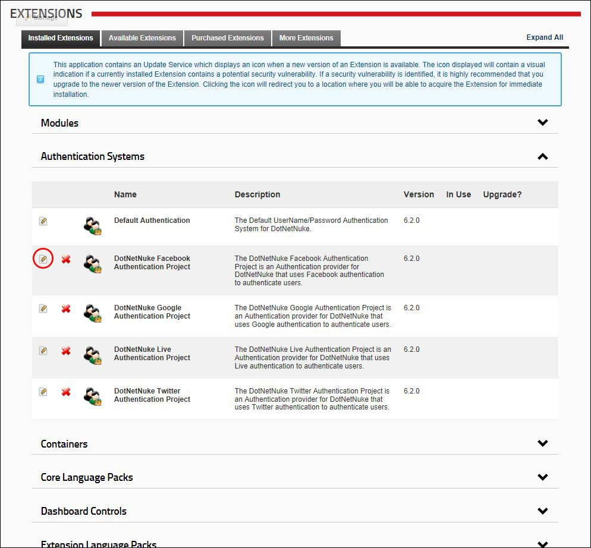

Managing Authentication System Settings
How to enable and manage the authentication systems for DNN including DNN default authentication, Twitter, Facebook, Google and Live. Evoq Content and Evoq Content Enterprise also come with the Active Directory Authentication provider.
- Navigate to Host >
 Extensions.
Extensions.
- Select the Installed Extensions tab.
- Expand the Authentication Systems section.
- Click the Edit
 button beside the authentication system to be edited. This opens the Edit Extension page.
button beside the authentication system to be edited. This opens the Edit Extension page.

- Expand the Authentication Settings section.
- At Enabled, select from these options:
- to enable this authentication system on all sites in this DNN installation. This allows Administrators to enable and configure this authentication system on their site.
- to disable the authentication system on all sites in this DNN installation. Skip to Step 11.
- Optional. In the Authentication Type text box, enter/edit the type of authentication System. E.g. Facebook.
- Optional. In the Login Control Source text box, enter/edit the location of the source files of the login control for this authentication system. E.g. DesktopModules/AuthenticationServices/LiveID/Login.ascx
- Optional. In the Logoff Control Source text box, enter/edit the location of the source files of the logoff control for this authentication system. E.g. DesktopModules/AuthenticationServices/LiveID/Logoff.ascx
- Optional. In the Settings Control Source text box, enter/edit the source of the Settings Control for this Authentication System.

- Click the Update Extension link.
-
See "Configuring Facebook Authentication"
-
See "Configuring Google Authentication"
-
See "Configuring Live Authentication"
-
See "Configuring Twitter Authentication"
-
See "Setting DNN Active Directory Authentication"